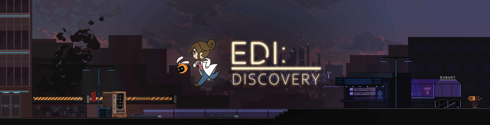
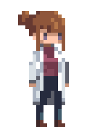
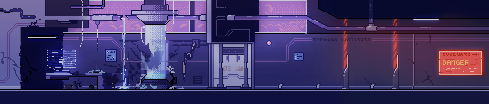

Edi: Discovery

About Edi: Discovery
Edi: Discovery is a story-rich 2D run-and-gun set in a dystopian cyberpunk future powered by the Unity game engine with a stunning pixelart style. The game is coded in C# in Unity, visuals designed using Aseprite and Photoshop, and sound/music designed with FL Studio. Interested in joining the Edi: Discovery team? We encourage you to file an application to the club via the membership page!
Our game takes place in Eden’s Paradise, a city caught between visions of the future corporate control. Edi is a young researcher on the brink of a major breakthrough. She is working on a promising new power source that has the potential to rethink the city’s energy. The only thing in her way is her mentor, Kanaan Augustus, who seems to have his own secret agenda. After an accident destroys her laboratory, Edi must use her knowledge to say alive long enough to discover the truth about what happened.
Once completed, we hope to release the game onto Valve's Steam store intially with hopes of releasing the game on both the Apple App Store and Google Play Store eventually!

Background Information & History:
Edi: Discovery is the EIC's first flagship project which the group has undertook. Having started conceptually in June 2020, it has continued to make consistent and steady progress as school and the COVID-19 pandemic have gone underway. Throughout this time, the project has made massive progress directly through the game but also indirectly as it has proven an excellent learning point for project management for the club as a whole.
With the club being founded during the COVID-19 pandemic, all in-person projects and acitivites were off the board, leaving the group with a difficult decision. We needed a project that could work with the very low budget the club started with as well as a project which could be done remotely and abide by social distancing and other COVID-19 guidelines. The founding members of the club discussed and eventually reached upon a conclusion: to develop a video game. Many free-to-use game engines were available combined with the ability to work on it remotely made it an enticing concept.
The game began with a conceptual phase attempting to answer the question: what is our game going to be? This proved to be a much more difficult question than we had initially anticipated and still is being pondered to this day. We had eventually landed upon the idea of doing a 2D platformer utilizing a pixelart style. Much of this would hold true but as development would speed up, the focus would shift over to a story-based shooter over the platforming aspect originally conceptualized.
Development proved to be a significant hurdle as the club itself was still getting its balance and would see a massive overhaul to streamline the efficiency of not only the project but the club itself. As the club got its footing, expanded its members, and created a more efficient system for undergoing projects overall, the Edi: Discovery team began to properly get going under the leadership of our two Project Directors: Shirley and Gabriel. Under their leadership, the project had a clear goal and vision to work towards and has been undergoing the development ever since.